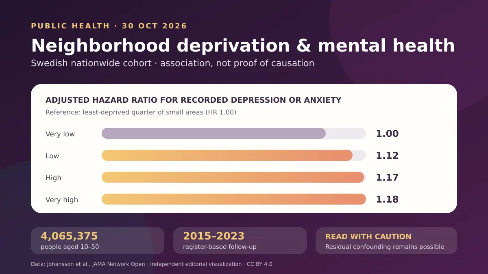

Araştırma, depresyon veya anksiyete kayıtlarında dikkat çekici bir toplumsal basamak gösteriyor ve yerel hizmetlerin hedeflenmesi açısından değerli olabilir. Ancak 1,18’lik tehlike oranı kişisel tanı, mutlak risk ya da mahallenin doğrudan etkisinin kanıtı değildir; hizmete erişim farkları ve ölçülmemiş bireysel veya ailesel etkenler ilişkinin bir bölümünü hâlâ açıklayabilir.

Bir dakikada ana fikir
Emily White Johansson, Anna Ohlis, Mathias Mattsson ve çalışma arkadaşları 30 Ekim 2026’da JAMA Network Open’da İsveç çapındaki bir araştırmanın sonuçlarını yayımladı. Araştırmacılar, başlangıçtan önceki on yılda kayıtlı depresyon veya anksiyete öyküsü olmayan 10–50 yaş arası 4.065.375 kişiyi 2015 başından 2023 sonuna kadar izledi. Soru, başlangıçtaki mahalle yoksunluğu düzeyinin sonraki ilk tanı veya ilgili ilk ilaç kaydıyla ilişkili olup olmadığıydı. [1]
En az yoksun dörtte birlik kesimle karşılaştırıldığında, en yoksun bölgelerde sonucun kayda geçme hızı istatistiksel düzeltmeden sonra %18 daha yüksekti: tehlike oranı 1,18 ve %95 güven aralığı 1,17–1,19. Kardeş analizinde tahmin biraz küçüldü, ancak yüksek kaldı: 1,15. Bu değerler ilişkiyi gösterir; yoksun bir mahallede yaşayan her bireyin kesin olarak %18 daha yüksek hastalık olasılığı taşıdığını veya yalnızca taşınmanın hastalığı önleyeceğini göstermez. [1]
Araştırma nasıl tasarlandı?
Araştırmacılar İsveç’in nüfus, reçete, hastane, uzman poliklinik, birinci basamak ve aile ilişkileri kayıtlarını kişisel kimlik numarasıyla eşleştirdi. 2015’teki 5.984 küçük bölgenin yoksunluğu; gelir ve sermaye, eğitim, istihdam ve konut başlıklarındaki 15 göstergeyi birleştiren bir endeksle ölçüldü ve dört düzeye ayrıldı. Sonuç, ilk depresyon veya anksiyete tanısıydı; tanı yoksa bu bozukluklarda yaygın kullanılan bir ilacın devam eden bakım kapsamında ilk kez verilmesi işaret olarak kabul edildi. [1]
Bu yaklaşım kesitsel bir fotoğraftan daha güçlüdür: maruziyet başlangıçta tanımlandı ve sonraki olaylar sekiz yıla kadar izlendi. Aynı ekibin önceki çalışması İsveç’te kayıtlı olguların genel dağılımını betimlemişti; yeni çalışma yakın dönem öyküsü olanları dışladı ve sonuca kadar geçen zamanı analiz etti. Buna karşılık, yoksunluk yalnızca 2015 adresine göre belirlendi ve sonraki taşınmalar hesaba katılmadı. [1] [2]
Sayılar ne anlatıyor?
Toplam 32 milyondan fazla kişi-yıllık izlemde 798.456 kişi sonuç tanımını karşıladı. Ham hız, en az yoksun bölgelerde 1000 kişi-yılda 22,8 iken en yoksun bölgelerde 25,6 oldu. Yaş, cinsiyet, kentsellik ve doğum ülkesi için düzeltmeden sonra düşük, yüksek ve çok yüksek yoksunluk düzeylerinin tehlike oranları sırasıyla 1,12, 1,17 ve 1,18’di. Yalnız kayıtlı tanıları kullanan analiz ile birinci basamak verisini çıkartan analiz de ilişkinin genel yönünü korudu. [1]
İlişki alt gruplarda aynı değildi. En yoksun ve en az yoksun bölgelerin karşılaştırmasında tahmin erkeklerde 1,23, kadınlarda 1,14; kentlerde 1,18, kent çevresinde 1,21 ve kırsalda 1,11’di. Farklar çevresel streslerdeki gerçek ayrımları yansıtabilir, fakat hizmete erişim ve başvuru davranışı da tanının kayda geçmesini etkiler. Kırsalda daha düşük kayıt hızı, otomatik olarak daha iyi ruh sağlığı anlamına gelmez. [1]
Kardeş karşılaştırması ne ekliyor?
Ortak aile geçmişinin etkisini azaltmak için araştırmacılar, 2015’te farklı yoksunluk düzeylerinde yaşayan 537.429 aileden 1.301.647 öz kardeşi karşılaştırdı. Bu analizde en yoksun düzeyin en az yoksun düzeye göre tehlike oranı 1,15’ti. İlişkinin bu karşılaştırmadan sonra sürmesi, farkın tamamının ortak genetik yapı veya çocukluk aile ortamıyla açıklanması olasılığını azaltır. [1]
Yine de aile içi karşılaştırma randomize deney değildir. Kardeşler gelir, iş, ilişkiler, bedensel hastalıklar, yaşam olayları ve yaşadıkları yeri seçme nedenleri bakımından farklı olabilir. Ayrıca bu analize yalnızca kardeşleri farklı yoksunluk düzeylerinde yaşayan aileler katkı verdi; bu nedenle sonuçların tüm ailelere genellenmesi sınırlıdır. Yöntem bazı karıştırıcıları azaltır, hepsini ortadan kaldırmaz. [1]
Neden hâlâ nedensellik diyemiyoruz?
Yazarlar, gözlemsel tasarımın nedensel çıkarıma izin vermediğini açıkça belirtiyor. Ters nedensellik mümkündür: depresyon veya anksiyeteye yatkın kişiler ekonomik ya da işle ilgili nedenlerle başlangıçta daha yoksun bölgelere taşınmış olabilir. Hafif olgular, kamu sistemi dışındaki başvurular ve bazı yıllarda eksik birinci basamak kapsamı eksik sayım yaratabilir; öte yandan bazı antidepresanlar kronik ağrı gibi başka durumlarda da verildiği için fazla sayım oluşabilir. [1]
Mahalle endeksi de bileşik bir ölçüdür ve aynı sınıf içindeki farklılıkları gizler. Bireysel ekonomik değişkenler, mahallenin etkisi ile sonuç arasındaki yolun parçası olabilecekleri gerekçesiyle ana modele alınmadı; bu tercih anlaşılır olsa da artık karıştırıcılığa alan bırakır. Dolayısıyla çalışma; konut, iş, eğitim, güvenlik, sosyal sermaye veya hizmete erişim bileşenlerinden hangisinin ilişkide rol oynadığını belirleyemez. [1]
Halk sağlığı açısından ne anlama geliyor?
Dünya Sağlık Örgütü; insanların yaşadığı, çalıştığı ve barındığı koşulları ve kaynakların dağılımını sağlığın sosyal belirleyicileri arasında sayıyor. Yeni çalışma bu çerçeveyle uyumlu uzunlamasına İsveç verileri sunuyor, ancak belirli bir politikanın etkisini sınamadı. Bulguların temkinli kullanımı; yoksun bölgelerin belirlenmesi, erişim açığının ölçülmesi, yerel hizmetlerin güçlendirilmesi ve müdahalelerin önceden tanımlanmış sonuçlarla değerlendirilmesi olabilir. Birey açısından adres bir tanı aracı değildir; bu makale klinik değerlendirmenin veya tedavi kararının yerini tutmaz. [1] [3]
Birincil kaynaklar
Ana makalenin açık erişimli tam metni, ana tabloları, yöntemleri ve JAMA Network Open sayfasında bildirilen sınırlılıkları incelendi. Ek dosyaların listesi görüldü, ancak indirilebilir ek dosya bağımsız olarak analiz edilmedi. Arka plan için önceki çalışmanın PubMed kaydı ve DSÖ’nün sağlığın sosyal belirleyicileri bilgi notu incelendi. İnceleme sırasında ana başlık veya DOI için bir düzeltme, geri çekme ya da endişe bildirimi bulunmadı.
- Johansson EW, Ohlis A, Mattsson M ve çalışma arkadaşları · Ulusal bir kohortta küçük alan yoksunluğu ve depresyon veya anksiyete · JAMA Network Open · 30 Ekim 2026 · DOI: 10.1001/jamanetworkopen.2026.41218
- Johansson EW ve çalışma arkadaşları · İsveç’te bölge, küçük alan yoksunluğu ve sağlık hizmeti düzeyine göre depresyon veya anksiyete · JAMA Network Open · 3 Ağustos 2026 · DOI: 10.1001/jamanetworkopen.2026.30530
- Dünya Sağlık Örgütü · Sağlığın sosyal belirleyicileri · Bilgi notu · 6 Mayıs 2025
Bu yazı genel bilgilendirme amaçlıdır; kişiye özel tanı veya tedavinin yerini tutmaz.